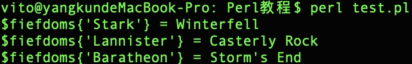
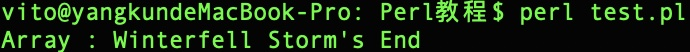
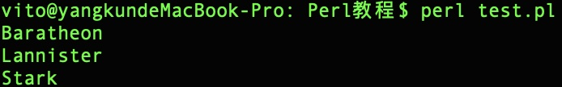
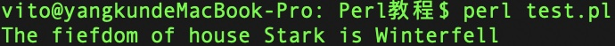
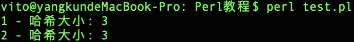
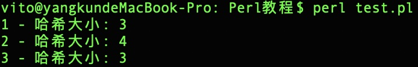
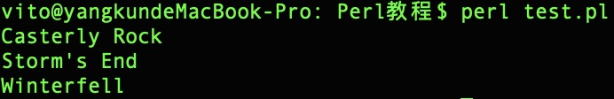

Perl 哈希
哈希是 key/value 对的集合。
Perl中哈希变量以百分号 (%) 标记开始。
访问哈希元素格式：${key}。
以下是一个简单的哈希实例：
实例
#!/usr/bin/perl
%fiefdoms = ('Stark' => 'Winterfell', 'Lannister' => 'Casterly Rock', 'Baratheon' => 'Storm\'s End');
print "\$fiefdoms{'Stark'} = $fiefdoms{'Stark'}\n";
print "\$fiefdoms{'Lannister'} = $fiefdoms{'Lannister'}\n";
print "\$fiefdoms{'Baratheon'} = $fiefdoms{'Baratheon'}\n";
执行以上程序，输出结果为：

创建哈希
创建哈希可以通过以下两种方式：
一、为每个 key 设置 value
$data{'google'} = 'google.com';
$data{'runoob'} = 'runoob.com';
$data{'taobao'} = 'taobao.com';
二、通过列表设置
列表中第一个元素为 key，第二个为 value。
%data = ('google', 'google.com', 'runoob', 'runoob.com', 'taobao', 'taobao.com');
也可以使用 => 符号来设置 key/value:
%data = ('google'=>'google.com', 'runoob'=>'runoob.com', 'taobao'=>'taobao.com');
以下实例是上面实例的变种，使用 - 来代替引号：
%data = (-google=>'google.com', -runoob=>'runoob.com', -taobao=>'taobao.com');
使用这种方式 key 不能出现空格，读取元素方式为：
$val = $data{-google}
$val = $data{-runoob}
访问哈希元素
访问哈希元素格式：${key}，实例如下：
实例
#!/usr/bin/perl
%fiefdoms = ('Stark' => 'Winterfell', 'Lannister' => 'Casterly Rock', 'Baratheon' => 'Storm\'s End');
print "\$fiefdoms{'Stark'} = $fiefdoms{'Stark'}\n";
print "\$fiefdoms{'Lannister'} = $fiefdoms{'Lannister'}\n";
print "\$fiefdoms{'Baratheon'} = $fiefdoms{'Baratheon'}\n";
执行以上程序，输出结果为：
读取哈希值
你可以像数组一样从哈希中提取值。
哈希值提取到数组语法格式：@{key1,key2}。
实例
#!/uer/bin/perl
%fiefdoms = (-Stark => 'Winterfell', -Lannister => 'Casterly Rock', -Baratheon => 'Storm\'s End');
@array = @fiefdoms{-Stark, -Baratheon};
print "Array : @array\n";
执行以上程序，输出结果为：

读取哈希的 key 和 value
读取所有key
我们可以使用 keys 函数读取哈希所有的键，语法格式如下：
keys %HASH
该函数返回所有哈希的所有 key 的数组。
实例
#!/usr/bin/perl
%fiefdoms = ('Stark' => 'Winterfell', 'Lannister' => 'Casterly Rock', 'Baratheon' => 'Storm\'s End');
@houses = keys %fiefdoms;
print "$houses[0]\n";
print "$houses[1]\n";
print "$houses[2]\n";
执行以上程序，输出结果为：

类似的我们可以使用 values 函数来读取哈希所有的值,语法格式如下：
values %HASH
该函数返回所有哈希的所有 value 的数组。
实例
#!/usr/bin/perl
%fiefdoms = ('Stark' => 'Winterfell', 'Lannister' => 'Casterly Rock', 'Baratheon' => 'Storm\'s End');
@headquarters = values %fiefdoms;
print "$headquarters[0]\n";
print "$headquarters[1]\n";
print "$headquarters[2]\n";
执行以上程序，输出结果为：
检测元素是否存在
如果你在哈希中读取不存在的 key/value 对 ，会返回 undefined 值，且在执行时会有警告提醒。
为了避免这种情况，我们可以使用 exists 函数来判断key是否存在，存在的时候读取：
实例
#!/usr/bin/perl
%fiefdoms = ('Stark' => 'Winterfell', 'Lannister' => 'Casterly Rock', 'Baratheon' => 'Storm\'s End');
if( exists($fiefdoms{'Stark'} ) ){
print "The fiefdom of House Stark is $fiefdoms{'Stark'} \n";
}
else
{
print "Stark 键不存在\n";
}
执行以上程序，输出结果为：

以上代码中我们使用了 IF...ELSE 语句，在后面的章节我们会具体介绍。
获取哈希大小
哈希大小为元素的个数，我们可以通过先获取 key 或 value 的所有元素数组，再计算数组元素多少来获取哈希的大小，实例如下：
实例
#!/usr/bin/perl
%fiefdoms = ('Stark' => 'Winterfell', 'Lannister' => 'Casterly Rock', 'Baratheon' => 'Storm\'s End');
@keys = keys %fiefdoms;
$size = @keys;
print "1 - 哈希大小: $size\n";
@values = values %fiefdoms;
$size = @values;
print "2 - 哈希大小: $size\n";
执行以上程序，输出结果为：

哈希中添加或删除元素
添加 key/value 对可以通过简单的赋值来完成。但是删除哈希元素你需要使用 delete 函数：
实例
#!/usr/bin/perl
%fiefdoms = ('Stark' => 'Winterfell', 'Lannister' => 'Casterly Rock', 'Baratheon' => 'Storm\'s End');
@keys = keys %fiefdoms;
$size = @keys;
print "1 - 哈希大小: $size\n";
$fiefdoms{'Targaryen'} = 'Crownlands';
@keys = keys %fiefdoms;
$size = @keys;
print "2 - 哈希大小: $size\n";
delete $fiefdoms{'Stark'};
@keys = keys %fiefdoms;
$size = @keys;
print "3 - 哈希大小: $size\n";
执行以上程序，输出结果为：

迭代哈希
我们可以使用 foreach 和 while 来迭代哈希：
实例 - 使用 foreach
#!/usr/bin/perl
%fiefdoms = ('Stark' => 'Winterfell', 'Lannister' => 'Casterly Rock', 'Baratheon' => 'Storm\'s End');
foreach $key (keys %fiefdoms){
print "$fiefdoms{$key}\n";
}
实例 - 使用 while
#!/usr/bin/perl
%fiefdoms = ('Stark' => 'Winterfell', 'Lannister' => 'Casterly Rock', 'Baratheon' => 'Storm\'s End');
while(($key, $value) = each(%fiefdoms)){
print "$fiefdoms{$key}\n";
}
执行以上程序，输出结果为：
